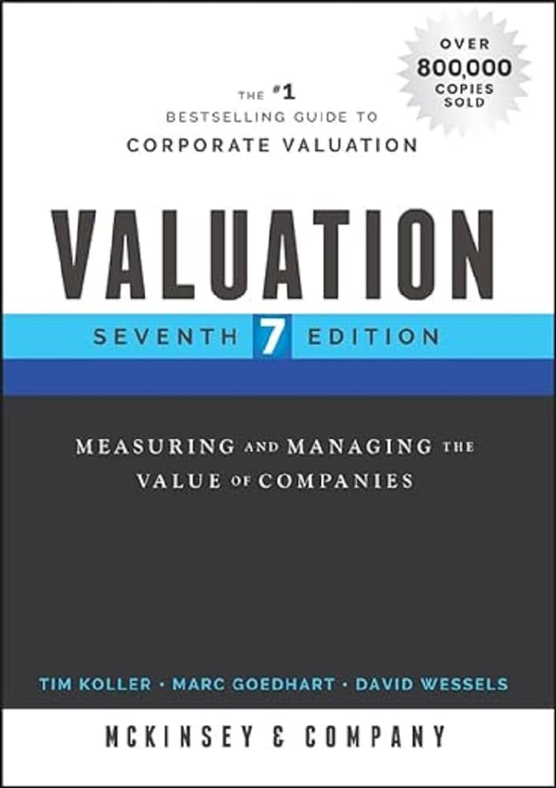

1990年，三位麦肯锡顾问汤姆·科普兰（Tom Copeland）、蒂姆·科勒（Tim Koller）和杰克·默林（Jack Murrin）把公司内部替客户做估值的方法整理成《价值评估》第一版。三十多年过去，这本书已更新到2024年的第8版，署名作者换成麦肯锡合伙人蒂姆·科勒、阿姆斯特丹办公室的资深专家马克·胡达特（Marc Goedhart）与沃顿商学院的戴维·韦塞尔斯（David Wessels），而封面上始终挂着"麦肯锡公司"的机构署名。它是沃顿、芝加哥布斯、MIT、INSEAD等商学院常用的估值教材，另有一个专供学生的University Edition。
这本书把公司价值追溯到两个、且只有两个驱动因素：投入资本回报率（ROIC）和增长。它反复申明一条看似简单却常被违背的原则——只有当ROIC高于资本成本时公司才创造价值；而增长只有在ROIC高于资本成本时才有意义，否则增长越快，价值毁灭越多。据此它警告：很多被吹捧的"价值创造"其实是幻觉，靠财务工程做高每股收益、或用低于资本成本的回报去扩张，并不会真正增加股东价值。方法层面，全书以企业自由现金流折现（DCF）为主干，并用"经济利润"（economic profit）模型作为平行视角；操作上则手把手教读者把会计报表重构成税后净营业利润（NOPAT）与投入资本、分析历史表现、做预测、估算永续价值和加权平均资本成本（WACC）。
历版都在扩充边界。较新的版本增加了数字经济、ESG、跨境与新兴市场估值等章节，并替换了大量案例，回应"以无形资产为主的公司该怎么估"这类新问题。中文版以《价值评估：公司价值的衡量与管理》为题引进，第4版由电子工业出版社于2007年出版，书名在各版之间保持一致。
如果说达摩达兰的书教人建立估值的直觉，这本书更像一部工程手册——它的价值在于把DCF从教科书公式变成一套可落地、可审计的流程，连"把三张报表拆解重排"这种脏活都写得很细。它对从业者最实在的提醒是：判断一桩并购、一次回购、一个扩张计划好不好，不看它是否做高了每股收益，而看它是否提高了投入资本回报率。这条标准朴素得近乎冷酷，却把大量看似聪明的资本动作挡在了"创造价值"的门外。